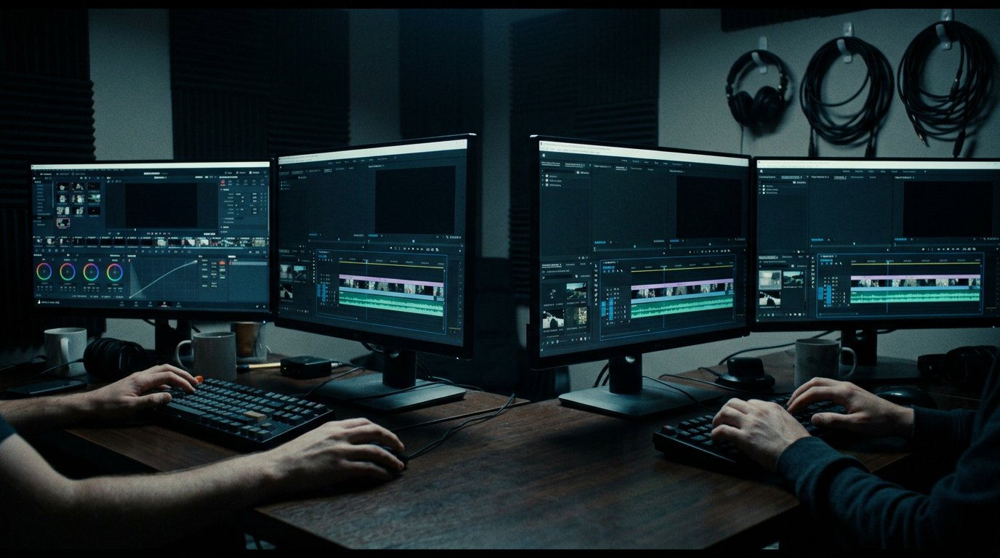

"The cut is the heartbeat of the film. I listen for it in the dailies — that moment when the footage starts breathing on its own."
— Clara Voss, European Film Academy interview, 2024

I started editing on a borrowed Avid in a basement in Hamburg. My first project was a forty-minute documentary about a fisherman on the Elbe — three hundred hours of footage about a man who barely spoke. I learned to find the story in the silences between his words.
After moving to Berlin, I cut my teeth on German television dramas before transitioning to features. My editors' note from film school still sits on my desk: "The rhythm is wrong." It was the best criticism anyone ever gave me, because it taught me that editing isn't about what you keep — it's about what you feel when you remove it.
Every film has a natural pulse. My job is finding it, then amplifying it until the audience can't help but breathe in time with the story.
"The best edit is the one that makes you forget you're watching a film. You're just... living inside it."